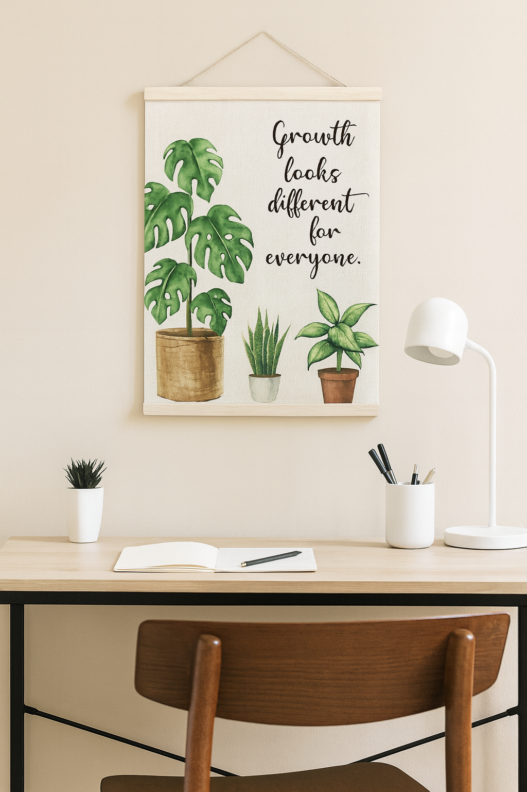
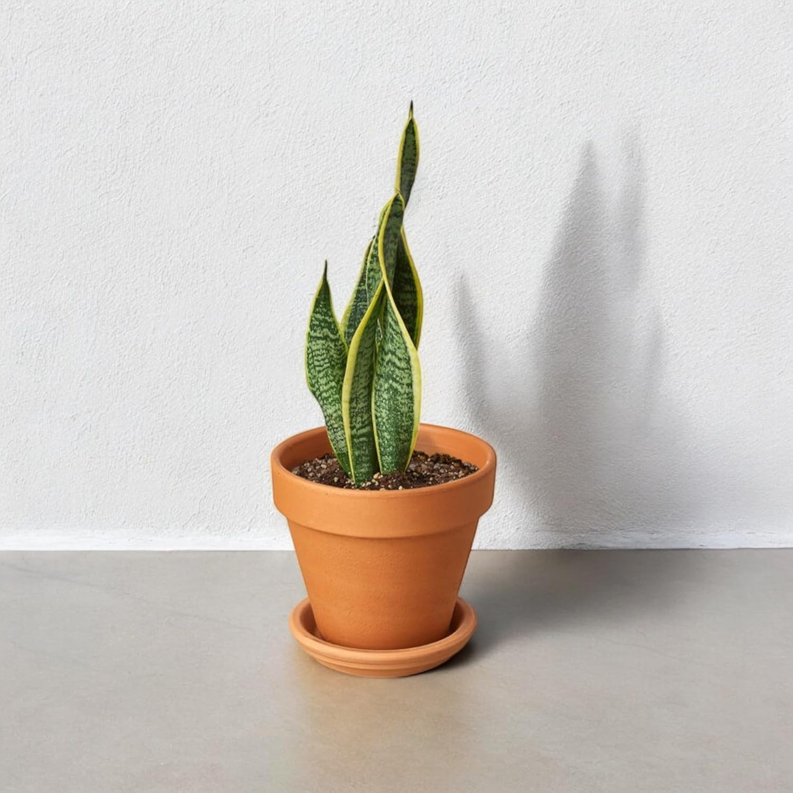
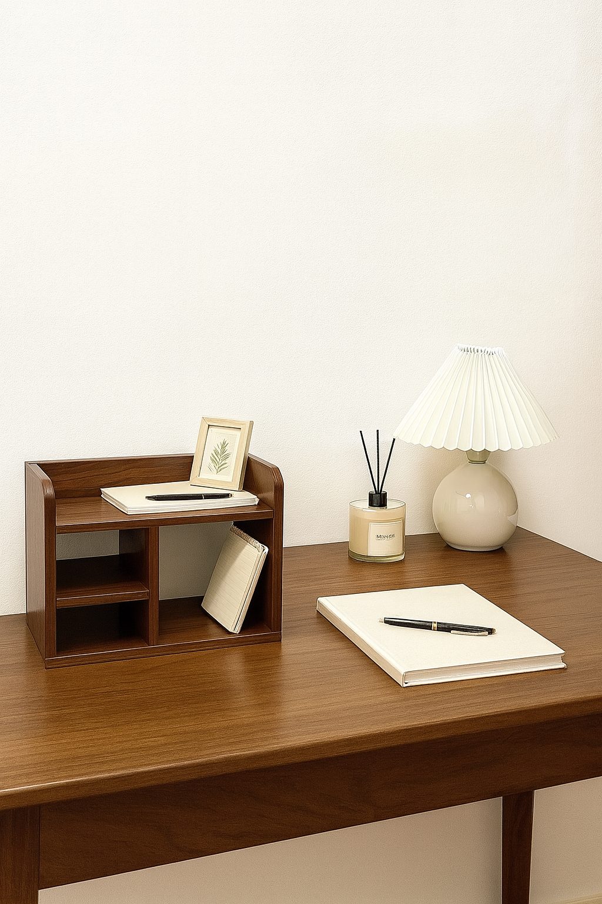
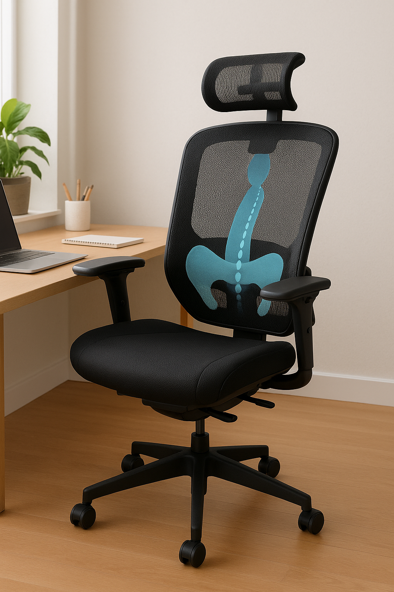

You sit down at your desk with good intentions. Coffee in hand, to-do list ready. But within an hour, you're drained. Your focus is scattered. Your back hurts. The space that's supposed to help you be productive feels like it's working against you.
Here's the truth: it's not you. It's your workspace.
Most of us spend hours at our desks without realizing that our environment is quietly sabotaging our workspace energy. The clutter, the uncomfortable chair, the uninspiring walls, the stale air—they all add up. And over time, they drain your motivation, focus, and physical wellbeing.
But here's the good news: you don't need a complete office overhaul or a massive budget. Just four intentional tweaks can transform your space from energy-draining to genuinely energizing. Think of this as a holistic refresh plan—addressing your mindset, your physical comfort, your air quality, and your visual environment all at once.
Let's create a productive home office that actually supports you.
1. Shift Your Mindset with Intentional Art
The Problem It Solves:
You're staring at blank walls or generic office decor that does nothing for your spirit. When your space lacks visual inspiration, it's easy to fall into negative thought patterns—especially on tough work days. Discouragement creeps in. Comparison culture from social media weighs on you. You lose sight of your own progress because nothing in your environment reminds you of what matters.
This is where mindful decor becomes powerful. A single piece of intentional wall art can serve as a daily anchor—a visual reminder of the perspective you need when the work gets hard.
Actionable Advice:
Choose art that speaks directly to something you struggle with or need to remember. "Growth Looks Different For Everybody" is a perfect example—it counters the comparison trap that drains so many people's energy. When you're tempted to measure your progress against someone else's highlight reel, a glance at that message resets your mindset.
Here's how to make it work:
- Placement matters: Hang it at eye level, directly in your line of sight when you look up from your screen. This ensures you'll actually see it during your workday, not just when you first set it up.
- Quality over quantity: One meaningful piece beats ten generic prints. Invest in a high-quality print or framed poster that feels substantial and worth your attention.
- Match your aesthetic: If you're creating a minimalist workspace, choose clean typography and neutral tones. If you want more energy, consider bolder colors or graphic designs. The art should enhance your space, not clash with it.
- Rotate seasonally: When a message stops resonating, switch it out. Keep 2-3 prints on hand and rotate them as your needs change. Fresh art refreshes your workspace energy without requiring a full redesign.
The Transformation: Instead of draining discouragement, your walls now offer daily encouragement. Your mindset shifts from depleted to supported—and that mental shift impacts everything else you do in that space.
2. Breathe Better with a Snake Plant
The Problem It Solves:
Your workspace air is likely worse than you think. Computers, printers, furniture, and even cleaning products release volatile organic compounds (VOCs) that build up in enclosed spaces. Poor air quality leads to headaches, fatigue, difficulty concentrating, and that general "stuffy" feeling that makes you want to escape your desk.
You need cleaner air, but you don't want complicated maintenance. That's where the snake plant becomes your secret weapon.
Actionable Advice:
The snake plant is one of the most effective air-purifying plants for home offices—and it's nearly impossible to kill. It filters formaldehyde, benzene, and other toxins while requiring minimal care, making it perfect for busy people who want the benefits without the fuss.
Here's how to set yourself up for success:
- Start with one healthy plant: Look for a 6-8 inch snake plant in good condition with firm, upright leaves. Avoid plants with yellow or mushy leaves, which indicate overwatering or disease.
- Choose the right pot: Snake plants need drainage. Use a pot with drainage holes and a matching saucer to prevent root rot. Ceramic or terracotta works beautifully and looks professional on a desk.
- Placement strategy: Position it on your desk corner or on a nearby shelf where it gets indirect light. Snake plants tolerate low light, but they'll grow better with some natural or artificial light.
- Minimal care routine: Water every 2-3 weeks, letting the soil dry completely between waterings. That's it. Seriously. Overwatering is the only real way to harm these plants, so err on the side of neglect.
- Multiply your impact: If you have a larger home office or spend 8+ hours at your desk, consider adding 2-3 plants. More plants = more air purification and oxygen production.
The Transformation: Your air feels fresher. Those afternoon headaches start fading. You can breathe deeper, think clearer, and maintain focus longer. Plus, having something living and green on your desk provides subtle psychological benefits—studies show that simply seeing plants reduces stress and increases productivity.
3. Clear Your Mind Through Desk Organization
The Problem It Solves:
Visual clutter creates mental clutter. When your desk is covered in papers, random supplies, coffee mugs, and things you "might need later," your brain is constantly processing that chaos. It's exhausting. You waste energy looking for things. You feel scattered before you even start working. The mess itself becomes a psychological drain.
A cluttered workspace signals to your brain that work is never finished, which prevents you from fully relaxing even during breaks. Organization isn't about perfection—it's about creating a system that supports your workspace energy instead of depleting it.
Actionable Advice:
True desk organization isn't about hiding everything away—it's about creating intentional homes for the items you actually use, so you can find them without thinking.
Start with this process:
- The desk surface audit: Remove everything from your desk. Yes, everything. Now put back only what you use daily: computer, notebook, pen, water bottle. Be ruthless. If you don't use it every single day, it doesn't belong on your primary work surface.
- Create zones: Designate specific areas for specific tasks. Supplies zone. Writing zone. Tech charging zone. When everything has a place, putting things away becomes automatic instead of a decision that drains mental energy.
- Use vertical space: Get items off your desk and onto walls or shelves. Floating shelves or a wall-mounted organizer frees up valuable desk real estate while keeping essentials accessible.
- Invest in functional storage: Use drawer organizers, cable management solutions, and desktop file holders to contain the chaos. The key is making it easy to maintain—if putting something away is complicated, you won't do it.
- The daily reset: Spend 2 minutes at the end of each workday returning everything to its place. This simple habit ensures you start fresh every morning instead of facing yesterday's mess.
- Minimize decorative clutter: Every item on your desk should either be functional or deeply meaningful. That random tchotchke you kind of like? It's visual noise. Keep only what truly enhances your productive home office experience.
The Transformation: Your desk becomes a calm, clear foundation for focused work. No more hunting for pens. No more subconscious stress from visual chaos. Just clean surfaces and mental clarity. You'll notice the difference immediately—your brain can finally relax and focus on the work that matters.
4. Support Your Body with Ergonomic Seating
The Problem It Solves:
That cheap chair you've been using? It's literally draining your energy—physically. Poor ergonomic seating forces your body into unnatural positions, leading to back pain, neck strain, poor circulation, and chronic fatigue. When your body hurts, your brain can't focus. You fidget, adjust, and waste energy just trying to get comfortable instead of actually working.
Physical discomfort is one of the biggest—and most ignored—drains on workspace energy. You can have perfect lighting, great organization, and motivational art, but if your chair is sabotaging your body, you'll still feel exhausted.
Actionable Advice:
Ergonomic seating isn't a luxury—it's a necessity if you spend more than a few hours a day at your desk. The right chair supports your spine, promotes good circulation, and allows you to work without physical strain.
Here's what to look for and how to use it properly:
- Lumbar support is non-negotiable: Your lower back needs support to maintain its natural curve. Look for a chair with adjustable lumbar support that you can customize to your body. If you already have a chair without lumbar support, add a lumbar cushion or back support pillow immediately.
- Adjustability matters: You need to adjust seat height, armrests, and backrest angle. Your feet should rest flat on the floor (or on a footrest), your thighs parallel to the ground, and your arms at 90-degree angles when typing. A chair that doesn't adjust forces your body to compensate—which drains energy.
- Try before you buy (when possible): If you're investing in a quality ergonomic office chair, check the return policy. You need to actually sit in it for a few days to know if it works for your body.
- Budget-conscious options: Can't afford a high-end ergonomic chair right now? Start with small fixes: add a lumbar cushion, use a footrest, or try a seat cushion designed for office chairs to improve your current setup. Even small ergonomic improvements make a measurable difference.
- Posture check-ins: Set a reminder every hour to assess your posture. Are your shoulders hunched? Is your neck craning forward? Is your lower back unsupported? Adjust immediately. The best chair in the world won't help if you slouch in it.
- Movement matters too: No chair can counteract sitting for 8 straight hours. Stand up every 45-60 minutes. Stretch. Walk around. Consider a standing desk converter if you want to alternate between sitting and standing throughout the day.
The Transformation: Your body stops fighting you. That constant low-grade discomfort disappears. You can sit for longer periods without pain, which means you can maintain focus and energy throughout your workday. Physical support directly translates to mental stamina—when your body feels good, your mind can perform at its best.
Your Workspace Refresh: Putting It All Together
Here's what you now have: a plan to address every major source of workspace energy drain.
- Mindful decor reminds you why you're doing the work
- Clean air keeps your brain oxygenated and alert
- Clear organization eliminates mental clutter and decision fatigue
- Ergonomic seating prevents physical exhaustion
Together, these four elements create a productive home office that genuinely supports you instead of depleting you. This isn't about aesthetics for Instagram—it's about building an environment that makes your best work possible.
Start with one change. Seriously—just one. Maybe it's finally getting that snake plant you've been thinking about. Maybe it's spending an hour organizing your desk this weekend. Maybe it's ordering the lumbar support cushion you know you need.
One intentional change creates momentum. You'll feel the difference immediately, which motivates the next change, and suddenly your entire workspace feels transformed.
Your energy is valuable. Stop letting your workspace steal it.
Ready to transform your space? Browse our curated collections of sustainable desk organization tools, air-purifying plants, and mindful office decor. Subscribe to our newsletter for weekly workspace tips and honest product recommendations that actually work.
Your productive, energizing workspace is closer than you think—one intentional choice at a time.
Disclosure: This post contains affiliate links, which means we may earn a small commission if you make a purchase through our links, at no additional cost to you. We only recommend products we genuinely believe will improve your workspace. Your support helps us continue creating helpful content like this.